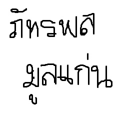

Hello World!!
My name is Pattarapon Moonkaen
Here is how my name is written in Thai

I am Thai live exactly right here:
I am also into Thai idol groups, "BNK 48." And, this is there most famous song:
I love music. I can play ukulele and guitar. This is my cover for คิดถึงฉันไหมเวลาที่เธอ (Kid tung chun mai we ra tee tur) by Taxi
I also love photographing. Here is the short silent film (kind of) which I made for the photography class I took last winter.
I want to get into CS major, and here is a CS major requirement for no reason XD: